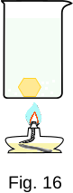

From the Heat phenomena
21. Heat engines
The work done by heat transfer usually happens in cyclical processes. These processes are performed in heat engines.
Heat engines are very diverse in design and function. These are steam turbines in thermal power plants, internal combustion engines in cars and tractors, and jet engines of various types.
The simplest heat machine can be assembled from a glass of water, a drop of aniline and a burner.
Figure 16 shows a tall container of water heated from below by a burner. The temperature of water \( T_1 \) in the upper layers is naturally lower than the temperature of \( T_2 \) at the bottom.
The density of aniline changes with temperature much more than the density of water. At \( T_1 \), it is lower than the density of water, and at \( T_2 \), it is higher. If you pour cold aniline into the water, the droplets will sink to the bottom. Once heated, the density of the droplets will decrease and they will float. At the surface, due to cooling, the density of aniline will increase and the droplets will sink to the bottom again. Then the whole cycle will be repeated.
Each cycle has a positive work done to overcome the friction of the droplet movement in the water. If the droplet is "loaded" at the bottom and "unloaded" at the top, the heat machine can be used to lift the load.
If to cover the glass with a glass plate, the temperature of the upper water layers will increase and the machine will stop working.
When the heat machine is running, it receives the quantity of heat \( Q_1 \) from the heater (burner) and transfers the quantity of heat \( Q_2 \) to the refrigerator (in this case to the atmosphere).
According to the energy conservation law, the work performed by the machine in one cycle is equal to the difference in the quantity of heat received from the heater and given to the refrigerator
\( \Delta W' = Q_1 - Q_2 \)
The efficiency of a heat engine equal to the ratio of work done \( \Delta W'\) to the quantity of heat produced for this purpose is
\( \eta = \frac{\Delta W'}{Q} = \frac{Q_1 - Q_2}{Q_1} \) (1-23)
Any heat engine: steam engine, steam turbine, internal combustion engine, jet engine - at work also receives from one or another heater temperature T1, the quantity of heat Q1 and gives to the refrigerator temperature T2, and the quantity of heat Q2. The efficiency of all engines is expressed by equation (1-23).